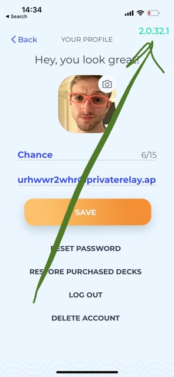
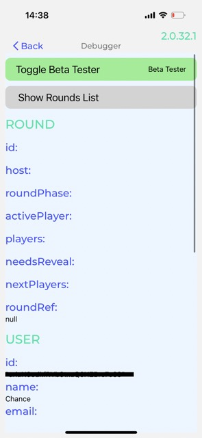
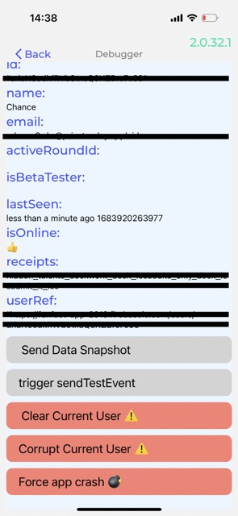

BetaTester Mode
When we built apps at Sodium Halogen, we found ways to speed up development, test features with trusted friends and family, and debug in any environment release. We call it BetaTester Mode.
In each app, we add this BetaTester Mode by adding a hidden button that reveals the version number at the top of the screen.

The hidden button turns on the version number that will now show on every screen you’re on. This is great for knowing the version used for user testing and screenshots.
You’ll know you are a beta-tester if your version number is green.
The hidden menu
If you press the version number, a menu will show up that allows you to turn on BetaTester Mode and see extra details and controls.


BetaTesters Have SuperPowers
When BetaTester Mode is on, here are some things you can expect:
- animations/transitions are faster, so testing is faster
- hidden features are unlocked/revealed
- unlimited access to content
- reveals extra buttons for developers
The point is
In your own apps, a BetaTester Mode can be helpful for your developers to have a faster feedback loop and a UX team to test features that are public to everyone.
This isn’t a list of easter-eggs in the app, but a way to move development along with incredible speed.
And, of course, you can set BetaTester Mode to be removed in your production environment.